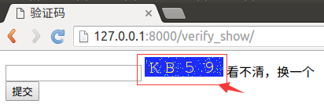

验证码
在用户注册、登录页面，为了防止暴力请求，可以加入验证码功能，如果验证码错误，则不需要继续处理，可以减轻业务服务器、数据库服务器的压力。
手动实现验证码
接下来的代码不要求手动写出来，因为这种代码在网上可以搜到很多。
1）安装包Pillow3.4.1。
pip install Pillow==3.4.1
点击查看PIL模块API，以下代码中用到了Image、ImageDraw、ImageFont对象及方法。
2）在booktest/views.py文件中，创建视图verify_code。
- 提示1：随机生成字符串后存入session中，用于后续判断。
- 提示2：视图返回mime-type为image/png。
from PIL import Image, ImageDraw, ImageFont
from django.utils.six import BytesIO
...
def verify_code(request):
#引入随机函数模块
import random
#定义变量，用于画面的背景色、宽、高
bgcolor = (random.randrange(20, 100), random.randrange(
20, 100), 255)
width = 100
height = 25
#创建画面对象
im = Image.new('RGB', (width, height), bgcolor)
#创建画笔对象
draw = ImageDraw.Draw(im)
#调用画笔的point()函数绘制噪点
for i in range(0, 100):
xy = (random.randrange(0, width), random.randrange(0, height))
fill = (random.randrange(0, 255), 255, random.randrange(0, 255))
draw.point(xy, fill=fill)
#定义验证码的备选值
str1 = 'ABCD123EFGHIJK456LMNOPQRS789TUVWXYZ0'
#随机选取4个值作为验证码
rand_str = ''
for i in range(0, 4):
rand_str += str1[random.randrange(0, len(str1))]
#构造字体对象，ubuntu的字体路径为“/usr/share/fonts/truetype/freefont”
font = ImageFont.truetype('FreeMono.ttf', 23)
#构造字体颜色
fontcolor = (255, random.randrange(0, 255), random.randrange(0, 255))
#绘制4个字
draw.text((5, 2), rand_str[0], font=font, fill=fontcolor)
draw.text((25, 2), rand_str[1], font=font, fill=fontcolor)
draw.text((50, 2), rand_str[2], font=font, fill=fontcolor)
draw.text((75, 2), rand_str[3], font=font, fill=fontcolor)
#释放画笔
del draw
#存入session，用于做进一步验证
request.session['verifycode'] = rand_str
#内存文件操作
buf = BytesIO()
#将图片保存在内存中，文件类型为png
im.save(buf, 'png')
#将内存中的图片数据返回给客户端，MIME类型为图片png
return HttpResponse(buf.getvalue(), 'image/png')
3）打开booktest/urls.py文件，配置url。
url(r'^verify_code/$', views.verify_code),
4）运行服务器，在浏览器中输入如下网址。
http://127.0.0.1:8000/verify_code/
5）浏览效果如下图：

可以多刷新几次看值会不会变。
调用验证码
1）在booktest/views.py文件中，创建视图verify_show。
def verify_show(request):
return render(request,'booktest/verify_show.html')
2）打开booktest/urls.py文件，配置url。
url(r'^verify_show/$', views.verify_show),
3）在templates/booktest/目录下创建verify_show.html。
<html>
<head>
<title>验证码</title>
</head>
<body>
<form method="post" action="/verify_yz/">
{%csrf_token%}
<input type="text" name="yzm">
<img id="yzm" src="/verify_code/"/>
<span id="change">看不清，换一个</span>
<br>
<input type="submit" value="提交">
</form>
</body>
</html>
4）运行服务器，在浏览器中输入如下网址。
http://127.0.0.1:8000/verify_show/
5）浏览效果如下图：

验证
1）在booktest/views.py文件中，创建视图verify_yz。
def verify_yz(request):
yzm=request.POST.get('yzm')
verifycode=request.session['verifycode']
response=HttpResponse('no')
if yzm==verifycode:
response=HttpResponse('ok')
return response
2）打开booktest/urls.py文件，配置url。
url(r'^verify_yz/$', views.verify_yz),
3）回到浏览器后刷新，在文本框中填写验证码，点击提交按钮。

4）浏览效果如下图：